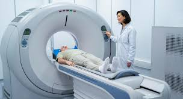
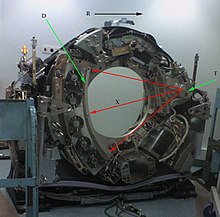
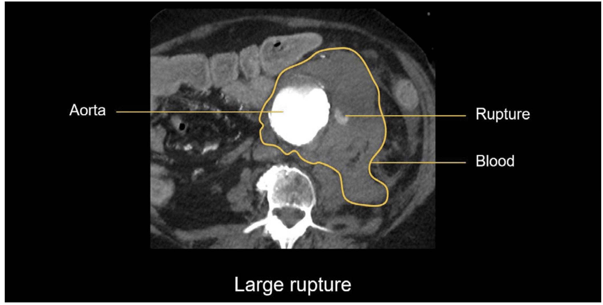
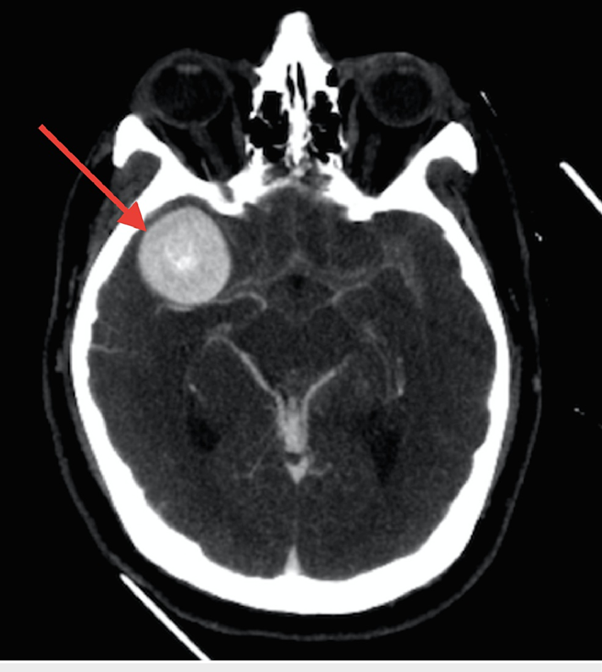

지난 시간에는
Aneurysm
의 정의, 발생 요인에 대해서
알아보았고,
이제는 어떻게 모니터링 하는지
영상촬영 방법에 대해서 알아보자.
1. Computed Tomography(CT)


X선이 측정물체(인체)를 얼마나
투과 할 수 있는 지 이다.
단위는
하운스필드 단위 (HU) 를 사용한다.
공기: 1,000 HU,
물: 0 HU,
해면골: 400 HU,
두개골: 2,000 HU 이상
결국, 엑스선 투과율에 따른 투과도 차이를
구분하여
3D 이미지
를 만드는 것이다.
CT는
다른 방법들에 비해서 값이 가장 저렴하여
가장 많이 사용하는 방법.
-> 빠르고, 비교적 정확한 검사.
(응급상황시 촬영)
(Computed Tomographed Angiography)
실제 혈관을 자세하게 볼때는,
CT촬영 전에,
조영제 (Angiogram)
를 투입한다.
:혈관을 더욱 명확하게 보일 수 있게
영상촬영전에 환자에게 투여하는 화학물질.
추후에 MRA에서도 설명 하겠지만,
사용 방식에 따라 다른 조영제를
환자에게 투여한다.
1. Iodine-based contrast agents - CT(엑스선에서 혈류 선명)
2. Gadolinium-based contrst agents - MRA(자기장에서 혈류 선명)
3. Barium-based contrast agents - (소화관 선명)
이후 CT촬영 하면,
다음과 같은 사진들이 나온다.

